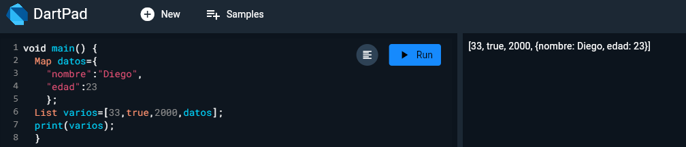

sesión 1 de Flutter y Dart
Dart es un lenjuaje de programación altamente tipado
Usa el método void como C#, Java y los derivados de C
Toda línea de código termina en ;
Está identado por llaves como JS

Tipos de datos en Dart

Concatenación e Interpolación

Comentar varias líneas de código al tiempo
Reto

Condicionales en Dart
Más condicionales
Tipos de datos dynamic y var
List

Map
Length
Prueba lógica con Item List
Funciones